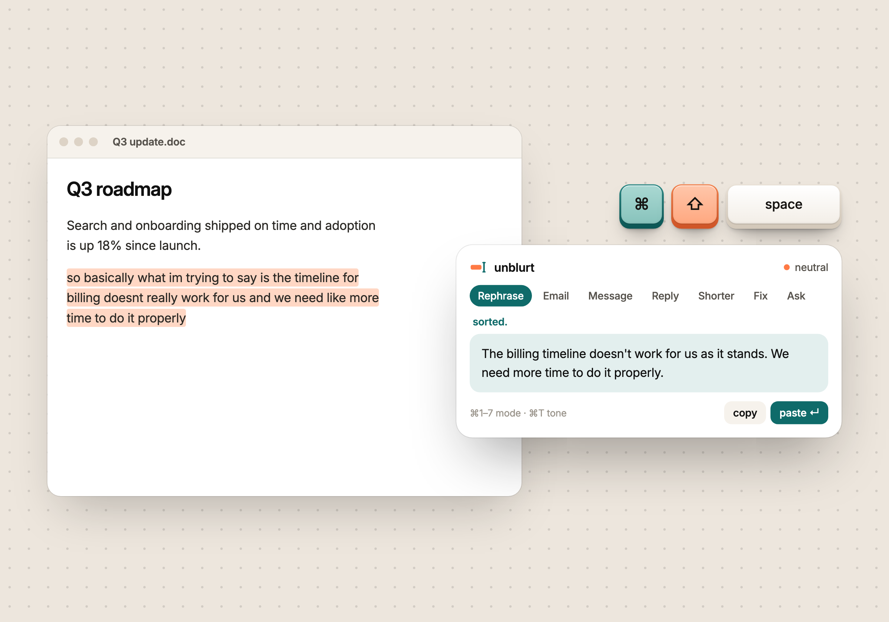
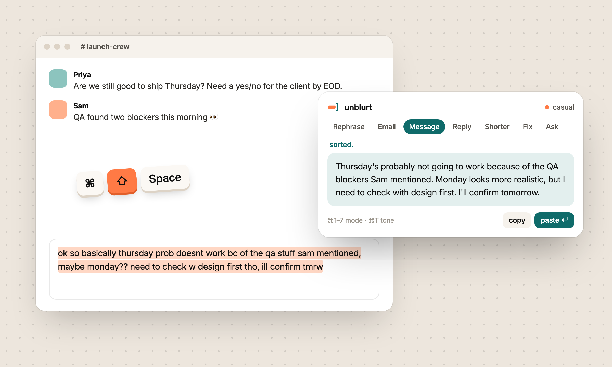
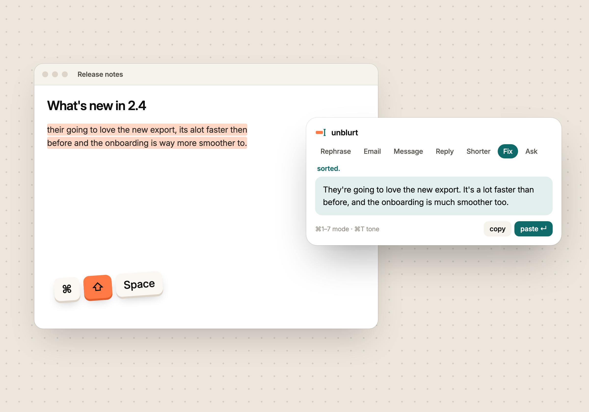
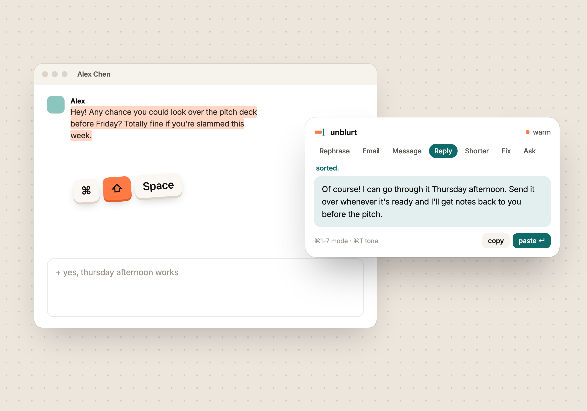
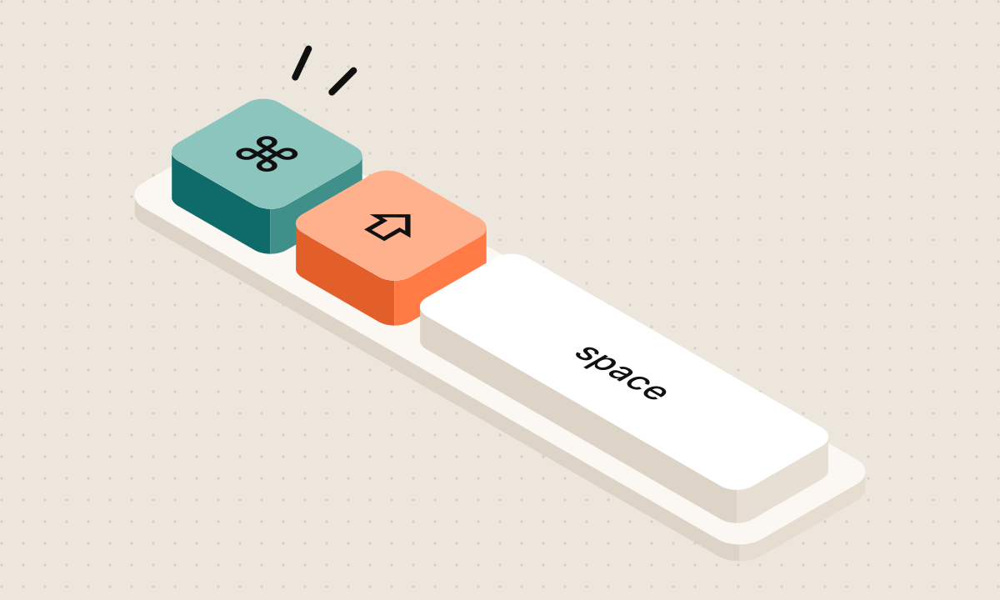
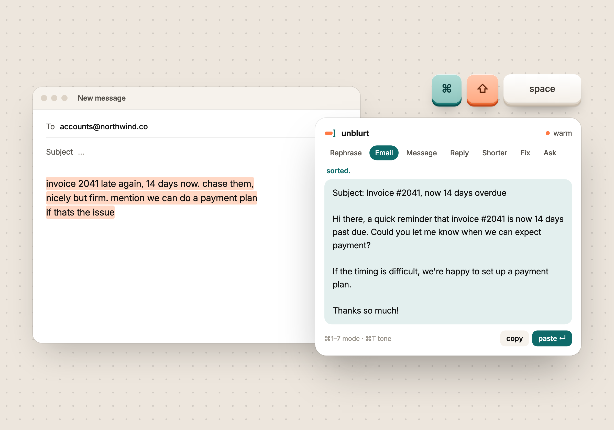

unblurt
unblurtspeak your mind.
ModeRephrase

messy
is fine.
Select text anywhere. Press one shortcut. Get it back written properly: rephrased, drafted, replied to.

Not dictation. Not another chat tab. A tiny window that fixes your writing right where you typed it.
I kept doing the same little dance.
Type something messy in Slack. Copy it.
Open ChatGPT. Paste it in.
Add "make this sound normal". Send.
Copy the answer.
Switch back. Paste. Ten times a day.
Now it's one shortcut, right where you typed.
I did that dance ten times a day, for messages that took thirty seconds to think of.
Voice tools like Wispr Flow fixed this for speaking. I wanted the same thing for typing: no new tab, no prompt to write, no account to make. Select, press a shortcut, get it back sorted.
unblurt runs on the model you already use, on your own machine, and gets out of the way. It's open source and still early, so if something feels off, tell me on GitHub.

messy
is fine.

we'll sort
it out.

every
time.

anywhere
you type.

clear
writing.
so basically what im trying to say is the timeline doesnt really work
The timeline doesn't work for us as it stands.
invoice late again, chase them, nicely but firm
Subject: Invoice #2041, now 14 days overdue …
running late 10 min start without me pls
Running about 10 minutes late, so go ahead and start without me.
+ politely no, maybe next quarter
Thanks for thinking of me. I can't take this on right now, but I'd love to revisit next quarter.
That four-paragraph update nobody will read past line two.
Same update. Three lines. Every point kept.
their going to recieve it tomorow
They're going to receive it tomorrow.
+ turn this into a checklist
Anything else you'd have typed into a chat box.
Five tones on top: casual, neutral, warm, direct, formal.
⌘T to cycleHighlight text in any app: mail, chat, docs, a browser field. Or select nothing and just start typing.
A small window pops up right where you're looking. Pick a mode, add a note if you want.
Enter once to write it. Enter again to paste it back where it came from. Done.
unblurt runs on opencode, the open-source AI engine. Plug in whichever model you already pay for, or one running on your laptop.
Free while in beta. macOS, Windows and Linux.
mid-
sentence.